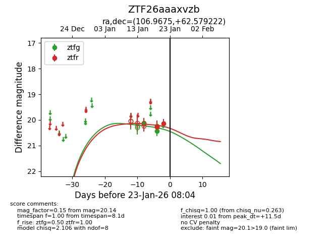
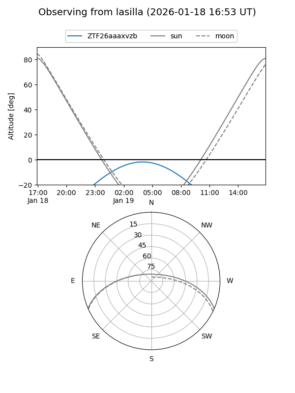
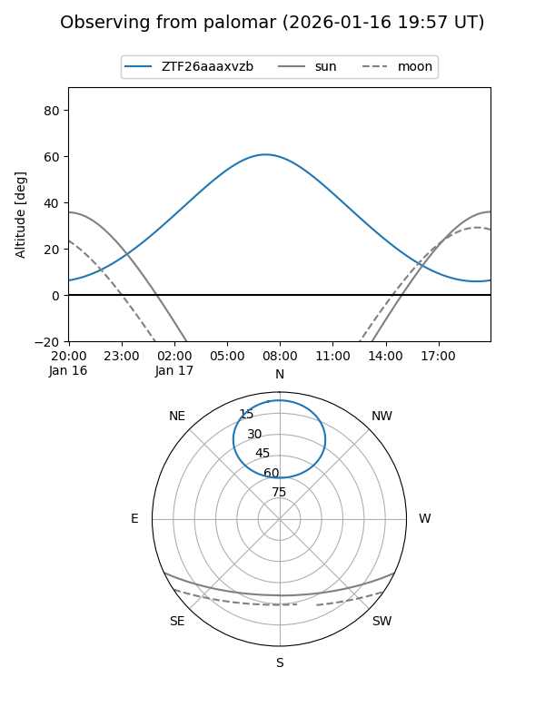
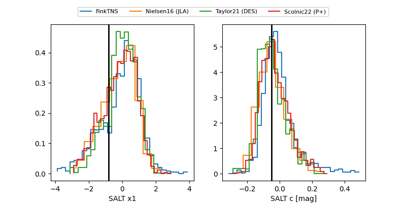

ZTF26aaaxvzb
Target ZTF26aaaxvzb at 2026-01-17 07:57
Aliases and brokers:
FINK: link
Lasair: link
ALeRCE: link
alt names
ZTF26aaaxvzb (ztf,fink_ztf)
Coordinates:
equatorial (ra, dec) = 106.9675,+62.57922
equatorial (HMS+DMS) = 07:07:52.21,+62:34:45.20
galactic (l, b) = (153.5884,+25.72898)
Flags:
Photometry:
last ztfg=20.12
1 ztfg detections
Lightcurve

Visibility


Additional plots
